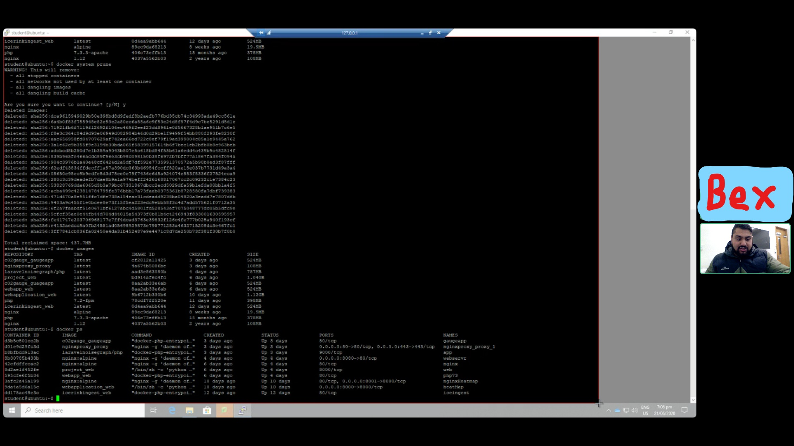

Technical Proficiency
First Sprint
We started our first sprint and planned out what projects to do. After being assigned to a task I spent the rest of the class time trying to understand and as I call it “Unravelling my brain”. Although I don’t have a solid solution, I am sure I can easily find out so I am mostly confident.

Exploring Documentation & Learning Docker
GitLab is still not working we were able to view documentation, but not login. Think I have a slight
understanding toward what technical tasks need to be done. I will be looking at the containers for the
servers, which is why I was looking at the documentation for Docker. I am slowly trying to understand what
it is that I need to do but I’m still not fully sure. In my own time I need to learn Docker but also Django
as I was advised to. Bex (also in the IOT team) made me realise that I needed to use a server. So I will be
creating a server.
I was given some instructions on what it is I have to do. I created an ubuntu virtual machine and was
given a good website known as tutorialpoint.com to learn docker from scratch. I had learnt Docker in
the past but have forgot most of it unfortunately. My first attempt was a fail, I tried to use Ubuntu
Server (see image bellow) assuming that would be enough for a server and not realising that trying to create servers on a
virtualisation is different and I don't need Ubuntu Server and might be better off using a normal desktop
Ubuntu. I have now got myself to a point of understanding the basics for Docker. Now to finally make an
impact towards my ticket. The next step is to start creating a web app in order to move forward towards
my ticket.

Alternative Method
Henry (former IOT student) showed me a web app he had pulled down from someones github. He had given me instructions on how to install and use it. Not realising at the time, I fully followed his instruction including installing a type of docker called docker.io. I already had docker on my vm so it showed errors as it was trying to run two types of docker at once. I thought it would be a good idea to just delete docker and reinstall, doing this broke my ingest webapp. So I learnt the hard way to be more careful with what I deleted on the vm. I am going to start again in a fresh new server. Martin introduced me to aptitude and helped me delete the extra docker packages
Local Ingest for Orokonui
I learnt the basics for docker up to the point of being able to make a web app. So then went on to create an Ingest web app locally. This took me a long time to complete and the difficulty was at an intermedite level. I watch many videos online and instructions on websites. It took me a while to learn and understand what I needed and what was not. I applied the knowledge I learnt from online and Martins' advice, I cut back on all the things I didn't need, for example I was creating an empty database instead of accessing an existing one or repetative lines that were not needed in the Dockerfile (I was installing mysql and pdo twice). Eventually I deployed a local ingest and though I had completed my ticket. After talking with Henry, he made me realise that it was not external and I could only use port 80 as that was the only open port. Not to say no impact was made as the ingest was Dockerfied and can be used to implement onto an external server.

Reverse Proxy
Testing C02 Gauge
Documentation for the C02 Gauge
Dockerfying the C02 Gauge
Deploying noisemap
Documentation for the Reverse Proxy
Professional proficiency
Start
We just had a meeting covering a basic introduction to the other members and learnt about what the
Internet of Things is. Martin (our lecturer/supervisor) explained the basic theory and talked about
current
client projects such as Orokonui. We learnt what IOT is and how we use TTN to connect to 'things' (our
devices).
He showed us what IOT is made up of, by drawing a diagram and showing us the structure. [ask henry for
photo of whiteboard]
After the class session I did some more googling and learnt more LoRaWAN and what IOT is in general.
After seeing examples
of IOT in our daily devices like a FitBit, I realised that if there is internet connectivity with data
communication on
a device, its IOT. From a poster on the wall in our IOT room (see bellow), I got a brief idea about the
steps invovled.
The poster made me realise what my role is and where exactly it fits in with IOT. [Picture of Joshes
diagram (circled webapps)]
Webex Meetings
Due to the whole covid outbreak, we are now forced to comunicate online and have our classes/meetings online. This made it difficult for us to comunicate and get needed help. ....(come back to this)
Team Communication and Scrum meetings
It has been hard trying to get help while being stuck at home, I was asking Martin for help but also trying not to bombard him with questions as he is a busy man and I'm not the only one who needs his help. In our meeting today, Martin advised us to comunicate with each other (as in the team) more. Our teams chat is not as active as it should be. We all agreed with Martin and created a seperate IOT team group [screen shot of the chat]. Me and Bex decided to work together via discord video chat. One of us would screen share and the other would help. [get on call with bex and ask for screen shot] I have said that I would be scrum master for a few weeks now but did not know the role and the importance of the role. I knew I had to lead the meeting but did not know how and felt very uncomfortable. Martin told me to make sure I do some reasearch before I lead the next scrum.
Working on tasks through video call
As I mentioned just before, me and Bex worked on Discord to get tasks and would arrange three days within the week to work on tasks.
I learnt the basics for docker up to the point of being able to make a web app.
Scrum Master
In order to understand the role of scrum master, I went back and did some revision on Agile and scrums in general first. I then went on understand the roles in agile and what each role has to do. I continued to learnt about the dos and don'ts of a Scrum Master and watch examples of a Scrum Master in meetings. [show roles diagram (add: after seeing this diagram it clicked), what I read and videos I watched (maybe embedd the video)]. I aksed Bee (project lead) for some advice on leading, she gave me a lot of help especially about being a Scrum Master. [ask bee if ok to snip messages she sent] The time has come for our next meeting, I am super nervous. I had prepared notes about what to say and do. I kept it kept the meeting agile and focused on three things. 1. What did you do yesterday 2. What are you going to 3. Are there any obstacles and ask if they needed help, I would finish the scrum by passing the meeting on to Martin. [Maybe turn this into a list] This was actually harder than I thought and I actually missed one member of our IOT group, it is not easy for me to lead and take on others responsibilities. However, being a Scrum Master made me pay more attention for what my team members are working on.[take photo of my notes] My role as a Scrum Master was not limited to just the meetings, I knew that I needed to put the team before me so I messaged all of my team mates and asked them if everything is okay and how their project is going and offer help. [not sure if taking snip is ok here]
3 Debriefs
Volunteering - Audacious
Find photo and talk about what I learnt, also mention breifly about how institutional service was not possible covid reasons sell degree?